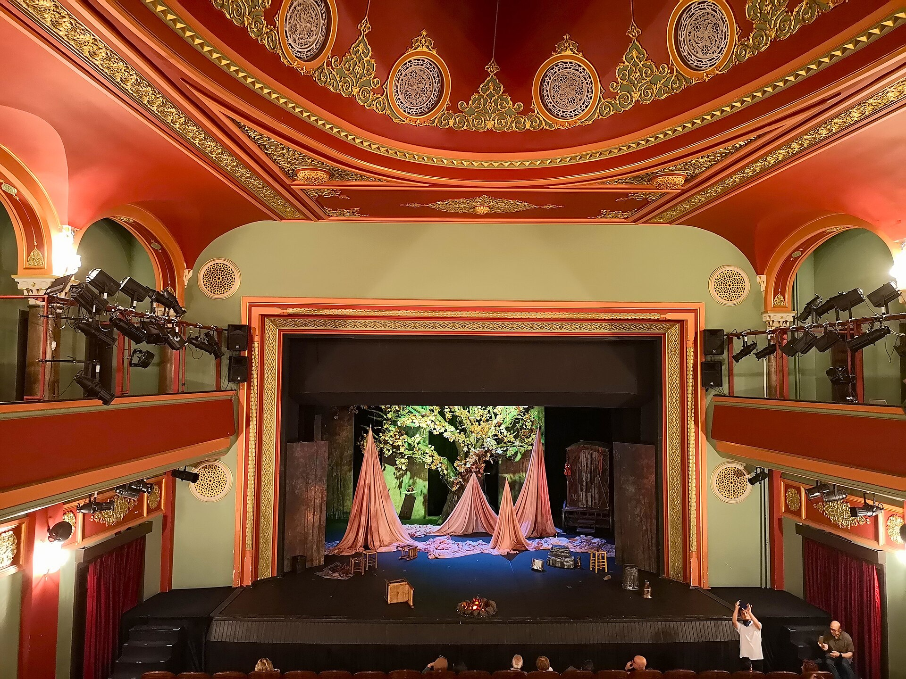
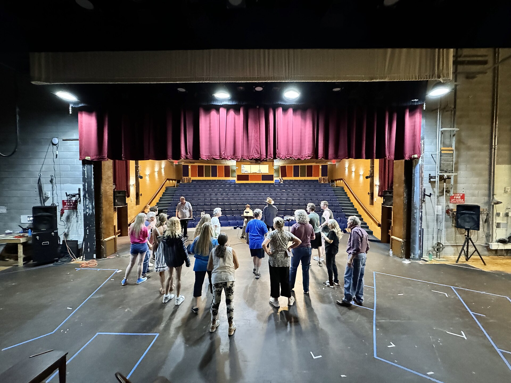

Amateur theatre in the heart of the village since 1974
Three shows a year, made by people who live here
Riverside Players is an amateur theatre group based at St Mark's Church Hall. We put on a play in the spring, a musical in the summer and a pantomime at Christmas, and we are always looking for new people to join in, on the stage or behind it.
Get involvedWhy choose Riverside Players
Three shows a year
A play in March, a musical in June and a pantomime in December, all performed in St Mark's Church Hall on Mill Lane.
No experience needed
New members are welcome at any rehearsal. Come along on a Tuesday evening and see if you like it. Nobody has to audition on their first night.
Not just acting
We need people to paint sets, sew costumes, run the lights, sell tickets and make the tea. Half our members have never set foot on the stage.

Where the money actually goes
We're run by volunteers, so almost everything we raise goes straight back into the work. We publish the numbers every year, and anyone is welcome to come and ask about them.